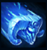
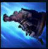
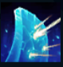
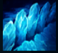

Braum
| Braum The Heart Of The Freljord | |
|---|---|
| Release date | 12.05.2014 |
| Class | Warden |
| Positions | Support |
| Resource | Mana |
| Range type | Melee |
| Adaptive type | Magic |
| Base statistics | |||
| Health | 540 – 2206 | Mana | 310.6 – 1075.6 |
| Health regen. | 8.5 – 25.5 |
Mana regen. | 6 – 19.6 |
| Armor | 47 – 115 | Attack damage | 55 – 109.4 |
| Magic resist. | 32 – 53.25 | Crit. damage | 175% |
| Move. speed | 335 | Attack range | 125 |
Binecuvântat cu mușchi masivi și cu o inimă și mai mare, Braum este un erou mult-iubit al Freljordului. Cei din hanurile de la nord de Frostheld ridică deseori pahare cu mied în cinstea forței lui legendare, despre care se povestește că ar fi dărâmat o pădure de stejar într-o singură noapte și că ar fi transformat un munte întreg în pietricele. Folosește o ușă vrăjită pe post de scut și cutreieră nordul înghețat cu un zâmbet mustăcios la fel de mare pe cât îi sunt și puterile. E un adevărat prieten pentru toți cei aflați la ananghie. | LOVITURI GRELE Atacurile de bază ale lui Braum aplică ''Lovituri grele''. După ce este aplicat primul cumul, și atacurile de bază ale aliaților aplică ''Lovituri grele''. Când ajunge la 4 cumuluri, ținta este amețită și suferă daune magice. În următoarele câteva secunde nu mai primește cumuluri, dar suferă daune magice bonus din atacurile lui Braum. |
|||
|---|---|---|---|---|
 |
MUȘCĂTURA IERNII Braum aruncă gheață din scutul lui, încetinind inamicii și provocându-le daune magice. Aplică un cumul de ''Lovituri grele''. |
|||
 |
TE APĂR EU Braum sare spre un campion sau minion aliat țintă. La aterizare, Braum și aliatul respectiv câștigă armură și rezistență la magie timp de câteva secunde. |
|||
|  |
INDESTRUCTIBIL Braum își ridică scutul într-o anumită direcție timp de câteva secunde, interceptând toate proiectilele, care îl lovesc și sunt apoi distruse. Respinge complet daunele primului atac și reduce daunele tuturor atacurilor următoare provenite din direcția respectivă |
|||
 |
FISURĂ GLACIALĂ Braum izbește pământul, aruncându-i în sus pe inamicii din apropiere și pe cei aflați în linie dreaptă în fața lui. În urma acestei linii rămâne o fisură care încetinește inamicii. |